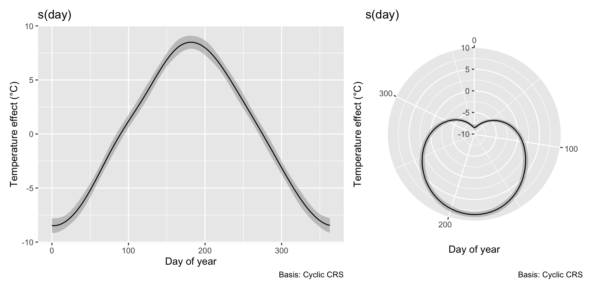
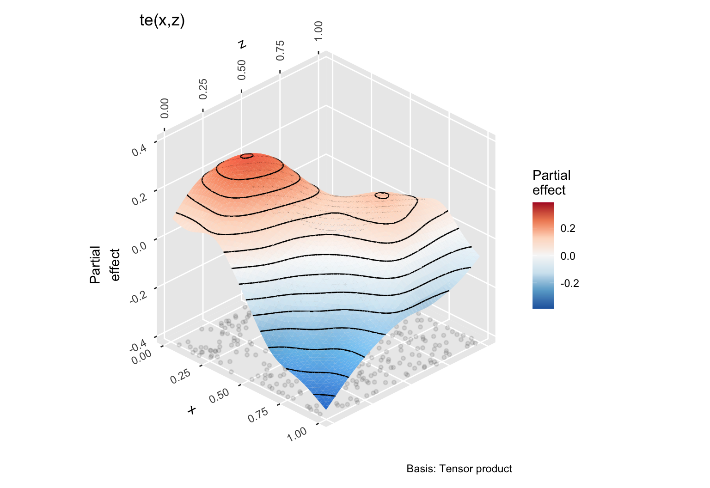
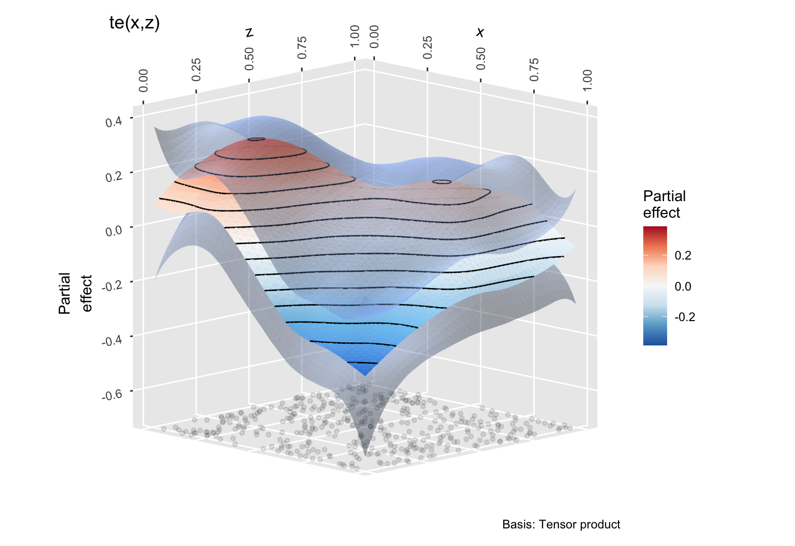

install.packages("gratia")gratia 0.12.1
New plots, predictions, and model checks for GAMs
R
A tour of what’s new in gratia 0.12.1 and the changes to check when updating existing R scripts.
A new version of gratia, 0.12.1, is now available on CRAN. This is a major new release, with a tonne of new features, improvements and bug fixes. There are so many changes in this version that ~1/2 of the Change log is dedicated to this version.
This release adds ways to compare predictions, describe the spread of a response, and check whether a fitted model can generate data like those we observed. There are new plots, too, and a few changes to check before you rerun scripts written for earlier versions.
You’ll need R 4.4.0 or later now to use gratia. This release also requires mgcv 1.9-4 or later, ggplot2 4.0.3 or later, and patchwork 1.3.2 or later. The full list of changes is in the release notes.
In this post I’ll cover a couple of new features, and over the next few days I plan to drop feed posts on all the new features as time allows.
Putting a seasonal smooth on a circle
Here’s one new feature to try straight away. If you’ve fitted a cyclic smooth, draw() can show it in polar coordinates. I’ll simulate a year of temperature measurements, fit a cyclic smooth, and draw the same effect on linear and polar axes.
library("mgcv")
library("gratia")
set.seed(12)
day <- seq(0, 365, by = 3)
temperature <- 10 - 8 * cos(2 * pi * day / 365) +
rnorm(length(day), sd = 1.5)
seasonal <- gam(
temperature ~ s(day, bs = "cc"),
knots = list(day = c(0, 365)), method = "REML"
)The usual partial effect plot for a cyclic smooth was the same as other univariate smooths. This remains the default, but from 0.12.1, you can choose to plot these using polar coordinates, which maps the smooth to a circle, with distance from centre encoding the partial effect. This is chosen using the cyclic = "polar" argument to draw(). I select s(day) in both calls and use wrap = FALSE so I can label each plot before combining them.
linear <- draw(
seasonal, select = "s(day)", rug = FALSE, wrap = FALSE
)[[1L]]
polar <- draw(
seasonal, select = "s(day)", cyclic = "polar", rug = FALSE, wrap = FALSE
)[[1L]]
axis_labels <- ggplot2::labs(x = "Day of year", y = "Temperature effect (°C)")
patchwork::wrap_plots(linear + axis_labels, polar + axis_labels)
The fitted cycle boundaries put the end of December next to the start of January. The polar view changes the presentation of the same estimated temperature effect and its interval.
Drawing a tensor product smooth in 3D
Another new feature is one that I have gone back and forth on over several years: 3D surface plots of bivariate smooths. In previous versions of gratia, you could only visualise these as 2D surface plots with geom_raster() or geom_tile(). 3D plots are a bit blingy, and largely antithetical to the layered grammar of graphics implement in ggplot2. But still, man users find it difficult to visualise the fitted surface when it is shown as a flat surface. Then along came ggcube, and my mind was made up.
In this example, I’ll use data_sim("bivariate_surface"), the new descriptive name for "eg2". It simulates a response that depends jointly on two covariates, x and z. I’ll fit a tensor product smooth with te(x, z), which allows the response to change with x in different ways at different values of z.
surface_data <- data_sim("bivariate_surface", n = 400, scale = 0.2, seed = 2)
surface_fit <- gam(
y ~ te(x, z, k = c(15, 15)),
data = surface_data, method = "REML"
)To draw the surface in three dimensions, you’ll need ggcube (version 0.3.0 or later).
The default draw() plot uses colour and contours to show the estimated effect on a flat grid. With surface = "3d", you can also see the effect as height above the x–z plane. Here I’ve turned the view with yaw and used a parallel projection with persp = FALSE.
draw(
surface_fit, surface = "3d",
surface_3d = list(yaw = 45, persp = FALSE)
)
To see how uncertainty in the smooth changes across the grid, I’ll draw it again from the same angle with ci_3d = TRUE. This adds two translucent surfaces at the lower and upper pointwise interval limits.
draw(
surface_fit, surface = "3d", ci_3d = TRUE,
surface_3d = list(yaw = 45, persp = FALSE)
)
What else is new?
- More control over effect plots. Style smooths, intervals, and diagnostic plots through ggplot2 component themes. Overlay or separate factor-related curves, draw parametric interactions, or display a surface in 3D with the optional ggcube package.
- Ways to ask more of a fitted GAM. Use
conditional_differences()to compare complete predictions between treatments andcompare_smooths()to compare smooth contributions from separate models. Plot conditional prediction surfaces, look at how response variability changes with a covariate usingconditional_moments(), or useale()to estimate accumulated local effects. - More model checks and sampling tools. Try posterior predictive plots, scalable diagnostic displays, residual plots against covariates, or new simulation-based and categorical residuals. Posterior sampling can retain several chains and report coefficient sampling diagnostics. Supported GAMs can also use the new likelihood, LOO, and WAIC methods.
- Wider model support. The release expands support for models fitted with scam, gamm4, glmmTMB, sdmTMB, and GJRM. It also adds interval tools for supported shape-constrained
mgcv::scasm()smooths. The available operations and uncertainty calculations depend on the model class.
What to check when upgrading
| If your code does this | Check this in 0.12.1 |
|---|---|
| Generates posterior draws | Name the sampling controls and supply n_draws explicitly when generating coefficient or sample draws. Use n_grid to set the resolution of an automatic smooth or derivative grid. |
Uses fitted_samples() as draws of the expected response |
It now returns distribution parameters by default. Request quantity = "expectation" for expected responses where available. Check any code that uses parameter names. |
Assembles a figure from draw() or assemble() |
An unselected GAM plot can now include parametric terms. Set parametric = FALSE for the old layout. Parametric plots use model-scale coordinates by default. Use back_transform = TRUE for the original covariate scale where supported. |
Sets plot colours and widths in draw(), or uses grouped_by |
Move appearance settings into theme() and use grouped for curve overlays. The old arguments are deprecated. |
Calls gratia::fixef() |
Use gratia::fixed_effects() for supported models. For fits from nlme or lme4, use the fitting package’s fixef(). |
If you rely on a fixed seed to regenerate simulated responses, posterior_samples() still gives reproducible results, but its response draws for that seed can differ from those in earlier releases.
Over the next few posts I’ll work through plot themes, updating sampling scripts, treatment contrasts, and the difference between fitted distribution parameters and response moments. They’ll appear with the other gratia posts.
Social